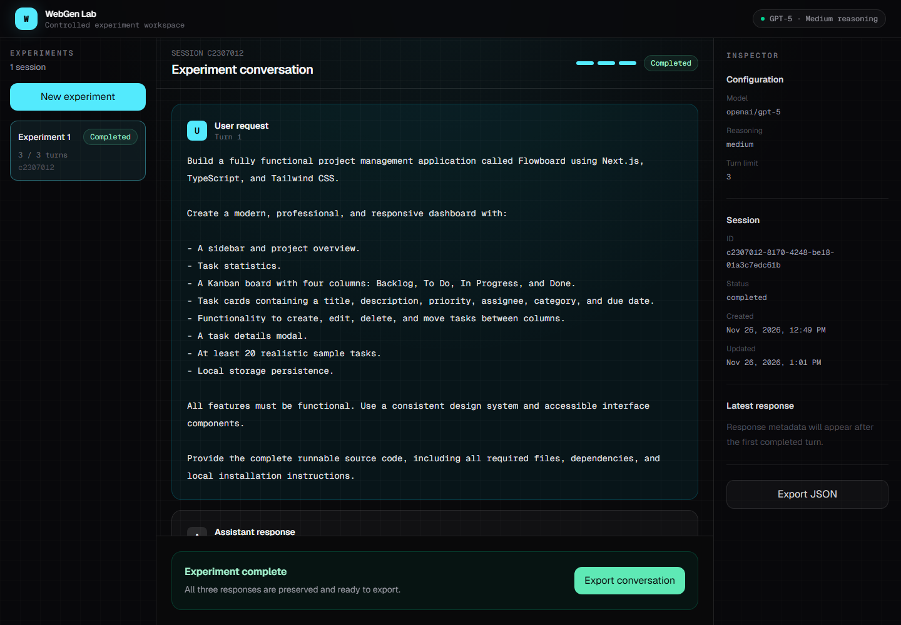

Architecture, experiment lifecycle, persistence model, integrity controls, and the three-turn Flowboard case study.
Use the buttons below to jump directly to a section. Every internal page includes a return button for fast navigation back to this summary.
WebGen Lab is not the Flowboard task manager. It is the controlled environment that asked an AI model to design Flowboard over three successive prompts and preserved the resulting evidence.
Evidence base: the current repository, the attached conversation.json, the public production deployment, and local verification commands. The live deployment and GitHub page both returned HTTP 200 during review.
The project uses the Next.js App Router as both the user interface host and a backend-for-frontend. Browser code manages interaction; all secrets, model calls, database access, validation, and state transitions remain server-side.
Session list, conversation review, prompt entry, progress state, response inspector, and JSON download.
REST-style endpoints create/list sessions, submit turns, load a session, and export a completed conversation.
Enforce the three-turn lifecycle, validate assistant completion, coordinate persistence, and map expected errors.
Receives the complete message history with fixed model and reasoning settings. Streaming is disabled to preserve a single response artifact.
Stores sessions, ordered messages, per-attempt request/response artifacts, and immutable final exports.
The interactive workspace is a Client Component because it needs state, event handlers, and browser downloads. It calls internal API routes rather than OpenRouter or Neon directly.
Modules that access credentials, the database, or upstream model responses import server-only, creating a build-time guard against accidental client bundling.
OPENROUTER_API_KEY. It is never embedded in request artifacts and must not use a NEXT_PUBLIC_ prefix.UI components render state; browser helpers perform HTTP calls; route handlers translate HTTP requests; domain services own lifecycle rules; storage modules write artifacts; OpenRouter modules own configuration, transport, and response validation. This makes the experiment rules testable without a live model or database.
A session progresses through active, processing, and completed. The browser never autonomously submits the next turn; the reviewer reads each response and decides what to ask next.
A UUID is generated with the fixed model, medium reasoning, turn limit of three, empty history, and active status.
A conditional database update changes only an eligible active row to processing. A competing submission receives a conflict instead of running twice.
The new user message is appended to every prior message. OpenRouter receives that full ordered history, the exact model identifier, medium reasoning, and stream: false.
The exact serialized request and the original upstream response body, HTTP status, content type, and timestamps are stored as an attempt.
Only a response with finish_reason: "stop" and non-empty content advances the turn counter.
Success appends the user/assistant pair and returns to active, or marks turn three completed. Failure releases the processing lock so the session can be retried manually.
The completed session must contain exactly six alternating messages. The same JSON is downloaded and stored; a conflicting later export is rejected.
Authentication, network, storage, non-JSON, schema, incomplete-response, or concurrency errors do not increment completedTurns.
No system/developer prompt injection, model fallback, automatic retry, background continuation, or automatic fourth turn is added by the application.
The schema is created lazily on the first database operation. A single cached initialization promise prevents repeated setup work within a runtime instance.
active sessions below the limit qualify.processing row.The downloadable file contains model, reasoning.effort, and the six chronological messages. Assistant fields returned by OpenRouter—such as reasoning details—are retained because the schema permits additional assistant properties. The attached export demonstrates this behavior.
Next.js Route Handlers expose a small internal API. Dynamic session endpoints are rendered on demand, while the main page and static icon are prerendered.
Zod validates environment variables and OpenRouter response structure. Database rows are also converted through a strict schema before becoming domain objects.
Domain and upstream failures become explicit HTTP responses: not found, busy, turn limit reached, incomplete response, storage failure, or upstream network/API errors.
Method, endpoint URL, content type, send timestamp, and the exact JSON body are stored. The authorization header is deliberately not part of the artifact.
Raw body, HTTP status, receive timestamp, content type, and whether parsing as JSON succeeded are stored before application-level validation.
The attached export contains exactly six chronological messages: three user requests and three assistant responses. Each turn adds constraints while preserving the application concept and technology stack.
The initial request defines Flowboard: responsive Next.js/TypeScript/Tailwind UI, sidebar, statistics, four-column Kanban board, task CRUD, drag-and-drop, details modal, sample data, accessibility, and local persistence.
The second request adds real-time text search, multi-select filters, overdue filtering, clear-all, priority/due-date/manual sorting, reordering across and within columns, visible/total counters, and persisted filter preferences.
The final request introduces a canonical hidden-task-safe order, exact cross-column behavior under active filters, mutation history, redo invalidation, reload persistence, and keyboard shortcuts that respect native text editing.
The prompts move from feature breadth to interaction composition and finally to difficult state invariants. This is a useful pattern for evaluating whether a model can preserve context while refining a design.
The assistant returned source code as text. The export preserves that answer, but WebGen Lab does not compile, execute, visually inspect, or test the generated Flowboard code.
It records the fixed profile and full conversation in a portable format, including assistant reasoning detail fields when OpenRouter returns them. That makes the run suitable for later qualitative review, rubric scoring, comparison with another model, or transformation into an executable-code evaluation dataset.

Production deployment captured on 26 November 2026. The selected session is complete, all three turn indicators are filled, and export is available.
Creates isolated sessions, lists existing experiments, and displays completion status and turn progress.
Separates user requests and assistant responses, keeps manual review central, and shows processing feedback.
Surfaces model profile, session identifiers, timestamps, response metadata, and the export action.
The dark, grid-based visual language resembles a technical laboratory rather than a consumer chat product. Cyan communicates the fixed configuration and active controls; green denotes completion; amber marks processing. Responsive rules collapse the three-column desktop workspace for smaller screens, while form controls expose disabled states during submission or after completion.
Prompts, assistant outputs, reasoning details, and raw upstream artifacts may contain private assessment material. Database access, logs, exports, and screenshots should be restricted accordingly.
Use sensitive environment variables, scope credentials by environment, rotate exposed keys, redeploy after configuration changes, and apply spending/rate limits at the gateway or perimeter.
Review commands: npm test, npm run typecheck, npm run lint, and npm run build. Revision 79140a7; 34 TypeScript/TSX source-and-test files and approximately 2,401 lines were counted for orientation, excluding generated and dependency files.
Required server variables are OPENROUTER_API_KEY, OPENROUTER_MODEL=openai/gpt-5, OPENROUTER_REASONING_EFFORT=medium, and DATABASE_URL. Node.js 20.9 or later is required.
Add authentication, authorization, rate limits, CSRF-aware mutation protection, audit access to stored artifacts, retention policies, and cost controls.
Extract generated files into an isolated workspace, install dependencies, build, test, capture screenshots, and attach machine-readable quality results to the session.
Record provider routing, full returned model identifier, sampling parameters, application revision, dependency lock hash, and evaluation rubric version.
Support named experiment profiles and side-by-side runs while keeping every profile explicit, immutable, and separately exportable.
Prepared in English from the project sources supplied by the repository owner. This document explains the implementation as reviewed; it is not a security certification or a claim that model-generated Flowboard code was executed.